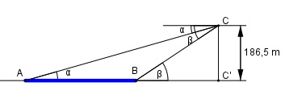
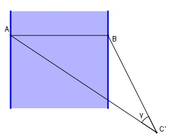
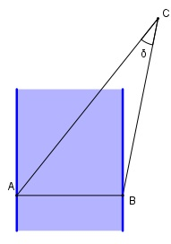

Aufgabe 188 Von einem Aussichtspunkt C aus erblickt man zwei gegenüberliegende Punkte A und B an den Ufern eines Flusses unter den Tiefenwinkeln α = 18,5° und β = 25,8°. Die Strecke AB erscheint horizontal unter dem Winkel γ = 31,3°. Berechnen Sie die Breite b des Flusses, wenn C 186,5 m über A liegt und den Sehwinkel δ, unter dem AB von dem Aussichtspunkt aus erscheint.

Im Dreieck BC’C: 186,5 m tan β = ----------- |*BC’ BC’ tan β * BC’ = 186,5 m |:tan β 186,5 m 186,5 m BC’ = ----------- = --------- = 385,8 m tan 25,8° 0,4834 Im Dreieck AC’C: 186,5 m tan α = --------- |*AC’ AC’ tan α * AC’ = 186,5 m |:tan α 186,5 m 186,5 m AC’ = ----------- = ---------- = 557,4 m tan 18,5° 0,3346 Auf der Horizontalebene gilt:
Fall SWS: Cosinussatz: AB2 = AC’2 + BC’2 - 2 * AC’ * BC’ * cos γ AB2 = 557,42 + 385,82 - 2*557,4*385,8*cos 31,3° AB2 = 557,42 + 385,82 - 2*557,4*385,8*0,8545° AB2 = 92 024,6 |√ AB = 303,4 m = b Im Dreieck BC’C: 186,5 m sin β = --------- *BC BC sin β * BC = 186,5 m |:sin β 186,5 m 186,5 m BC = ----------- = ---------- = 428,5 m sin 25,8° 0,4352 Im Dreieck AC’C: 186,5 m sin α = --------- |*AC AC sin α * AC = 186,5 m |:sin α 186,5 m 186,5 m AC = ----------- = ---------- = 587,8 m sin 18,5° 0,3173 Sehwinkel von C aus:
Fall SSS: Cosinussatz: AB2 = AC2 + BC2 - 2*AC*BC*cos δ |+2*AC*BC*cos δ AB2 + 2 * AC * BC * cos δ = AC2 + BC2 | -AB2 2*AC*BC*cos δ = AC2 + BC2 - AB2 |:2*AC*BC AC2 + BC2 - AB2 cos δ = ----------------- = 2 * AC * BC 587,82 m2 + 428,52 m2 - 303,42 m2 = ------------------------------------ = 2 * 587,8 m * 428,5 m = 0,8681 --> δ = 29,8°